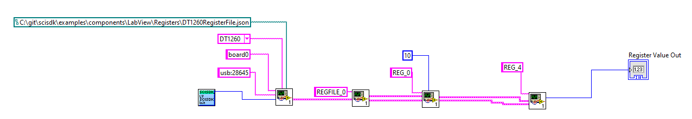

The register file component allows to create a group of register having a common root node. The usage of the register file is similar to the usage of the register component except that groups the registers in a common root node. For example the register files can be used to group the registers that are used to configure the charge integrator parameters in a firmware
charge_integrator
└─── gain
└─── offset
└─── pre_integrator
└─── integrator
└─── trigger_threshold
└─── trigger_inhibit
└─── baseline_length
Each element in the register file works as a regular register. It is possible to access to every single element in the register file for read and write.
A read or write to register is a blocking operation and the execution do not contine till operation is completed.
Register in register file can be configure as read only or read/write.
A vairant of the register file is the multichannel register. The behaviour of the multichannel register is similar to the register file but it allows to configure the number of channels that the register file will have. The number of channels is defined by SciCompiler. Each register has a common name and a channel number.
threshold
└─── CH0
└─── CH1
└─── CH2
└─── ....
Endpoint
In order to a register inside a register file the path is:
board0:/MMCComponents/<name of the register file>.<name of the register>
Inside a sub-page the path is:
board0:/MMCComponents/page1/<name of the register file>.<name of the register>
Methods
Set a value in the register
SCISDK_DLL_API int SetParameterInteger(
char* Path,
int value,
void* handle);
SCISDK_DLL_API int SetParameterString(
char* Path,
char * value,
void* handle);
#define SCISDK_DLL_API
Definition SciSDK_DLL.h:19
Get a value in the register
SCISDK_DLL_API int SCISDK_GetParameterString(char *Path, char **value, void *handle)
Get the value of a parameter for the specific SciCompiler Memory Mapped Component or route the value ...
SCISDK_DLL_API int SCISDK_GetParameterInteger(char *Path, int *value, void *handle)
Get the value of a parameter for the specific SciCompiler Memory Mapped Component or route the value ...
Path: the full path of the registervalue: value to be set or value read, can be an integer or a string (in decimal format)handle: handle to the library
Python, C++, C# and Java uses classes indeed handle is not required
C++:
++
sdk.SetParameter(Path, value);
sdk.GetParameter(Path, &value);
C Sharp:
sdk.SetParameterInteger(Path, value);
sdk.GetParameterInteger(Path, ref value);
Python:
err = sdk.SetParameterInteger(Path, value)
err, value = sdk.GetParameterInteger(Path, value)
Example
The following examples uses three register A, B, C in the register file rf. The firmware will calcualte C=A+B (and store the result in C). We set register A and B to 10 and 20 and we read the value of C.
C
SetParameterInteger("board0:/MMCComponents/rf.A", 10, handle);
SetParameterInteger("board0:/MMCComponents/rf.B", 20, handle);
int value;
GetParameterInteger("board0:/MMCComponents/rf.C", &value, handle);
printf("C=%d\n", value);
C++
++
sdk.SetParameter("board0:/MMCComponents/rf.A", 10);
sdk.SetParameter("board0:/MMCComponents/rf.B", 20);
int value;
sdk.GetParameter("board0:/MMCComponents/rf.C", &value);
printf("C=%d\n", value);
C Sharp
sdk.SetParameterInteger("board0:/MMCComponents/rf.A", 10);
sdk.SetParameterInteger("board0:/MMCComponents/rf.B", 20);
int value;
sdk.GetParameterInteger("board0:/MMCComponents/rf.C", ref value);
Console.WriteLine("C={0}", value);
Python
err = sdk.SetParameterInteger("board0:/MMCComponents/rf.A", 10)
err = sdk.SetParameterInteger("board0:/MMCComponents/rf.B", 20)
err, value = sdk.GetParameterInteger("board0:/MMCComponents/rf.C")
print("C={0}".format(value))
JAVA
sdk.SetParameterInteger("board0:/MMCComponents/rf.A", 10);
sdk.SetParameterInteger("board0:/MMCComponents/rf.B", 20);
Ref<Integer> value = new Ref<>(0);
res = sdk.GetParameterInteger("board0:/MMCComponents/rf.C", value);
System.out.println("C=" + value.get());
Labview

You can find the labview file for this example here